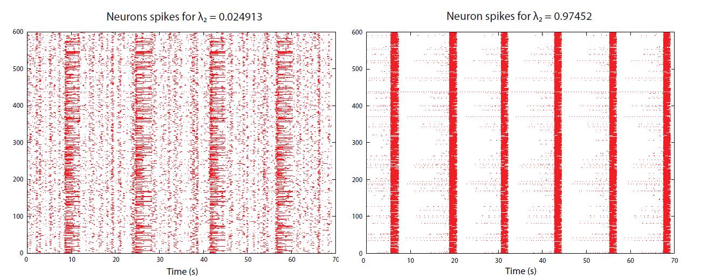

Abstract:
The synchronization of discrete complex systems is critical in applications such as communication and transportation networks, neuron respiratory systems, and other systems in which either congestion can occur at individual nodes, or system wide synchrony is of importance to proper functionality. The first non-trivial eigenvalue of a network's Laplacian matrix, called the algebraic connectivity, provides a quantifiable measure of synchronizability in a network. We study the general relationship between network topology, clustering coefficient distributions, and synchronizability, as well as the effects of degree preserving rewiring on network synchronizability. In addition, we compare the synchronizability of different network topologies, including Poisson random graphs, geometric networks, preferential attachment networks, and scale-rich networks. We also explore uses of the algebraic connectivity in the design and management of complex networks where synchronization is desired (respiration networks), or detrimental to network performance (router networks).Documents:
Synchronizability and Connectivity of Discrete Complex Systems
@article{Holroyd06,
author = {Michael Holroyd},
title = {Synchronizability and Connectivity of Discrete Complex Systems},
journal = {International Conference on Complex Systems},
year = {2006}
}

Synchronizability and Connectivity of Discrete Complex Systems
@misc{Holroyd06b,
author = {Michael Holroyd},
title = {Synchronizability and Connectivity of Discrete Complex Systems},
howpublished = {Department of Mathematics, The College of William and Mary},
year = {2006}
}
Understanding the Structure of Power Law Networks
@article{Kincaid08b,
author = {Rex Kincaid and Christopher Gatz and Michael Holroyd},
title = {Understanding the Structure of Power Law Networks},
journal = {Proceedings of Spring Simulation Multiconference},
year = {2007},
volume = {2}
}
An Investigation of Synchrony in Transport Networks
@article{Kincaid08,
author = {Rex Kincaid and Natalia Alexandrov and Michael Holroyd},
title = {An Investigation of Synchrony in Transport Networks},
journal = {Journal of Complexity},
year = {2009},
volume = {4}
}